The six Shiny tools of NetSimR run right here, in your browser, with webR, R compiled to WebAssembly, and shinylive. Nothing to install.
Your data never leaves your computer
The tools run inside your browser: R itself is downloaded to the page and does the work there. A file you open in a tool is read by that R, on your computer, and is not sent to us or to anyone else. This website is a set of static pages: there is no server behind it that could receive your data. How this works, and how it was checked.
The six Shiny tools
NetSimulator Claims & reinsurance simulator
Frequency-severity simulation with Pareto tails, caps and reinsurance layers, with return periods, run comparison and a report.
Open NetSimulatorNetDisFit Distribution fitting
Fit claim counts and sizes, including claims above a reporting threshold or at their policy limits; compare the fits with Q-Q, P-P and Hill plots and their tail expectations, and send them to the simulator and the reinsurance pricing tool, with a report.
Open NetDisFitNetGLM GLM fitting
Fit generalised linear models to a CSV or Excel file, with splines and bands; let stepwise selection or the lasso suggest the terms, test them on held-out rows, and download the rate table and a report.
Open NetGLMNetReserve Claims reserving
The chain ladder with Mack's standard errors, Bornhuetter-Ferguson, Cape Cod, the bootstrap and the Munich chain ladder, with discounting and the risk adjustment for IFRS 17 and Solvency II, and a report.
Open NetReserveNetTreaty Reinsurance pricing
Price an excess of loss layer with the burning cost, a Pareto model and exposure curves, blend them, and compare quota share, surplus, excess of loss and stop loss programmes by their cost and the capital they save, with a report.
Open NetTreatyNetCapital Portfolio capital
Join lines of business with a Gaussian or t copula: VaR, TVaR, diversification and each line's capital, beside the Solvency II standard formula.
Open NetCapitalNew to the tools? A worked example runs each of them on the package’s example data, with the report it writes.
Gallery

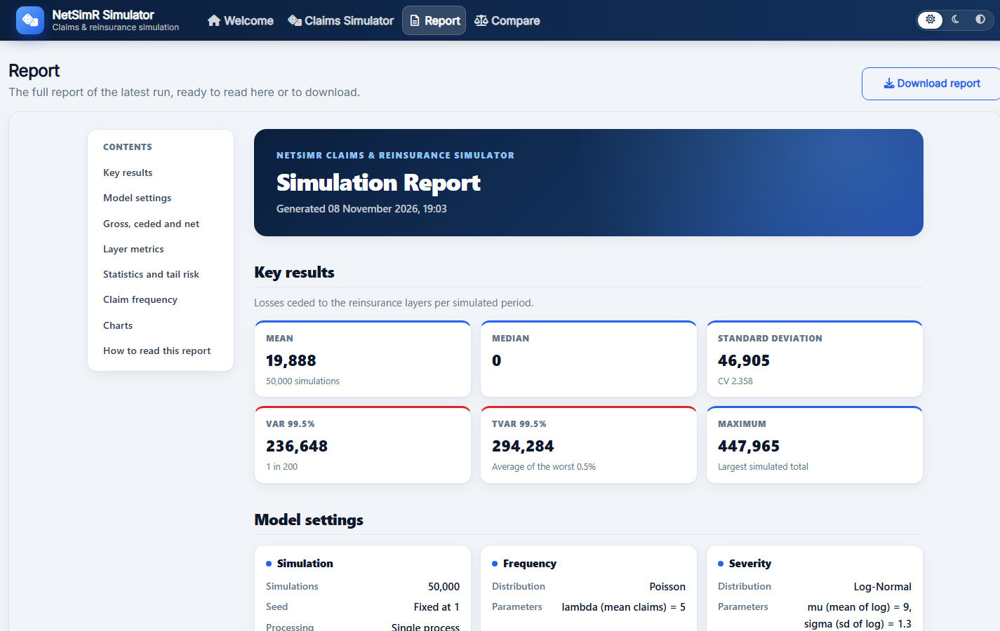

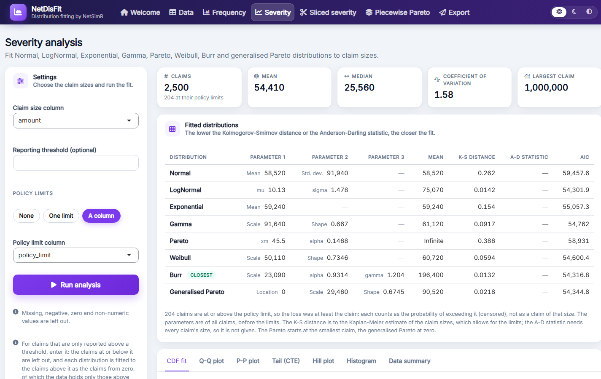

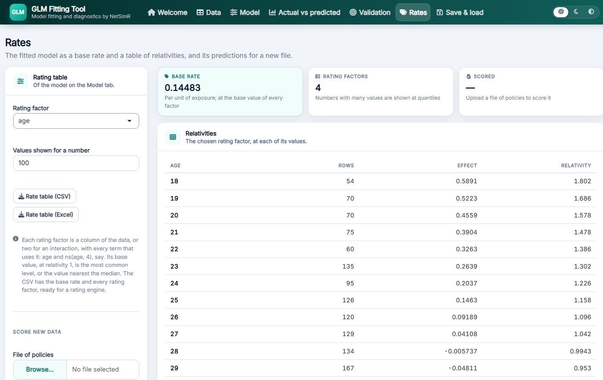

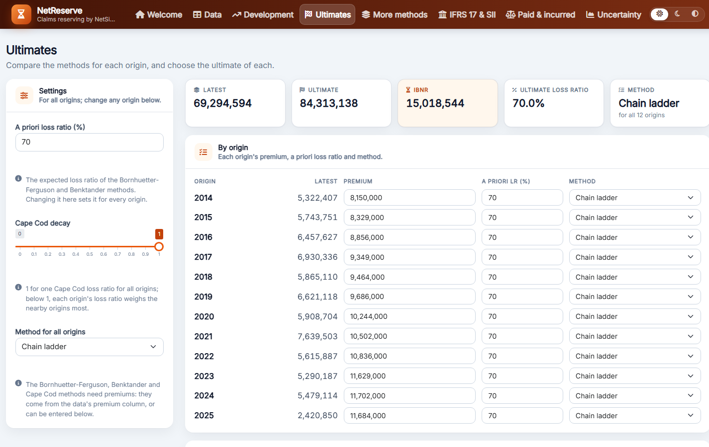

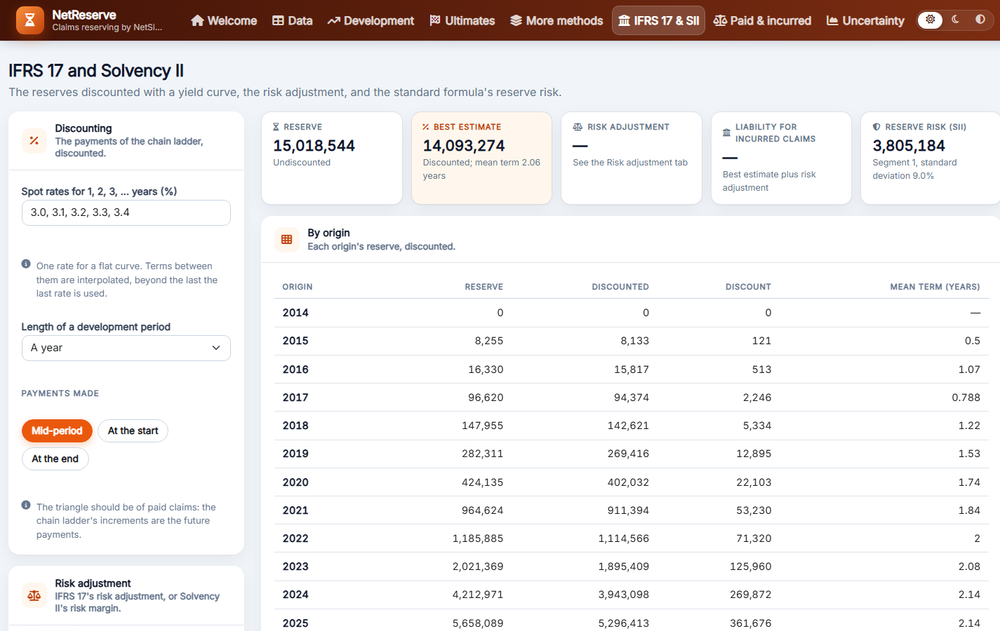

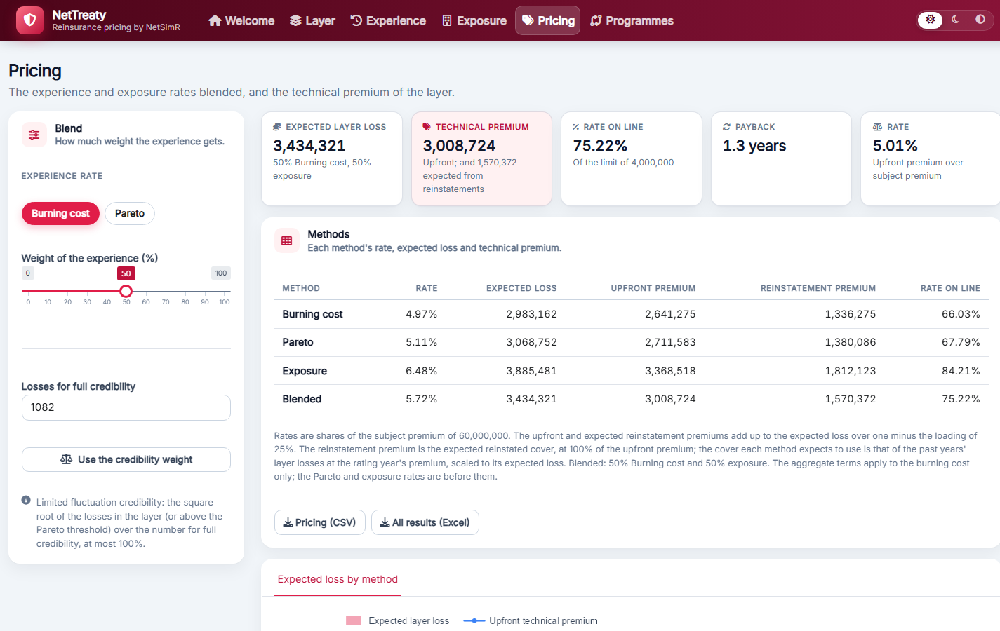

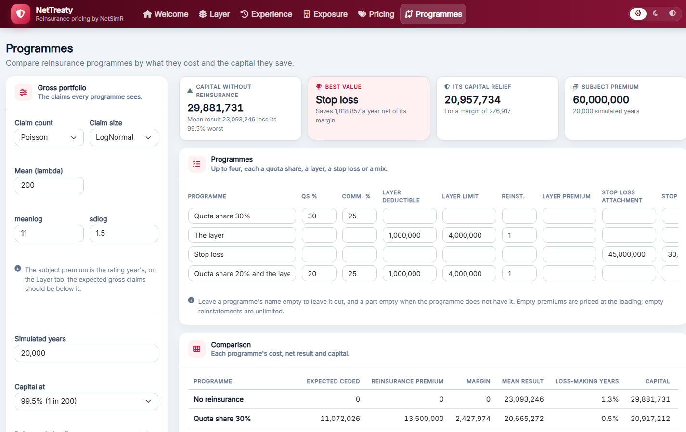

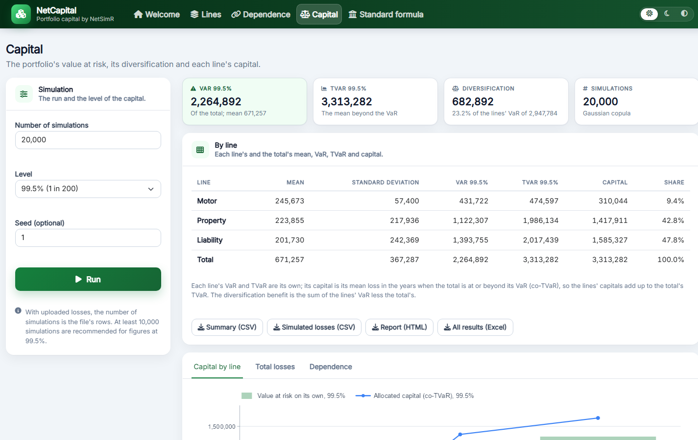

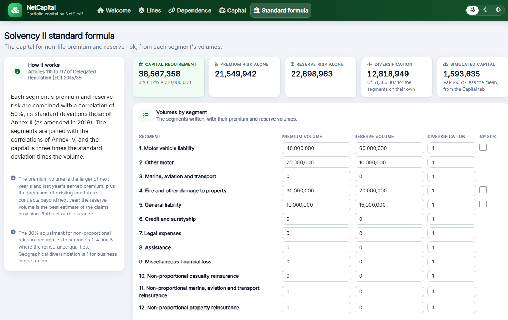
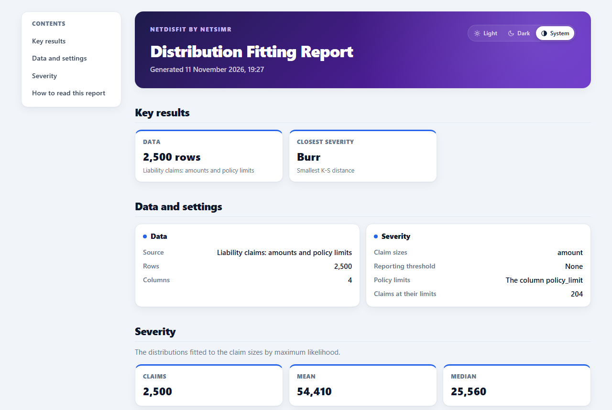
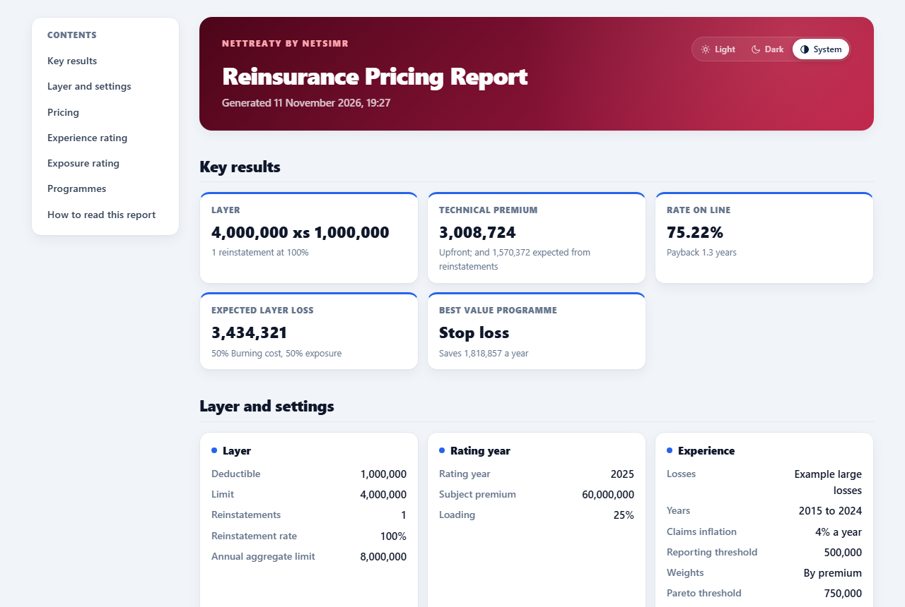
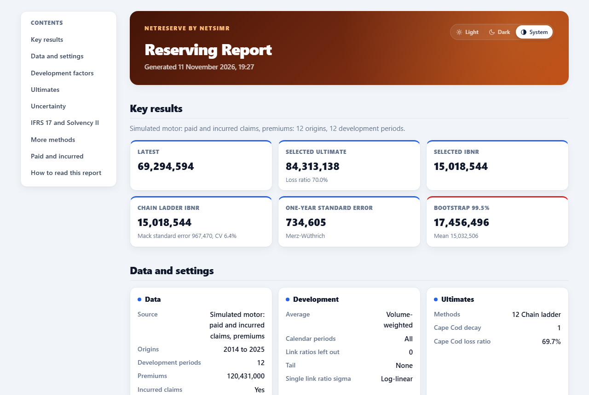
Need a tool like these built around your own data and methods? See Custom tools.
Your data stays on your computer
Claims, policies and triangles are confidential, so this is worth being exact about.
- Where the work is done. A tool’s page downloads R and the packages it needs, and runs them in your browser. The file you choose is handed by the browser to that R, in the page’s memory. The fits, simulations and charts are made there.
- What is sent: nothing of yours. The website is static pages on GitHub Pages. There is no server behind it that runs code or could keep a file, so there is nowhere for a file to go.
- What the page does fetch. Downloads only: R, its packages and their files, from this website and from the repository of webR. None of these requests carries anything from your files or your results. The tools bring their own fonts and icons, so a page asks no other server for anything.
- The one thing reported: that a page was visited. The website counts page visits with GoatCounter: the address of the page, where the visit came from, the kind of browser, the size of its screen and the country, without cookies or personal data. Nothing you upload, type or compute is part of it.
- What you save stays with you. Reports, settings files and CSV or Excel downloads are written by your browser to your own computer. Closing the tab ends the session and clears its memory.
- How it was checked. In November 2026 a file of claims with marked values was opened and fitted in NetDisFit on this website, while the browser logged every request it made to the network. The file’s name and its values were in none of them.
- In R, the same holds. Installed from CRAN, the tools run in R on your own computer, need no internet connection and make no request to any other server, and count nothing. The GLM tool’s database source connects only to the database you name. If your company’s rules exclude any web tool, this is the way to use them.
The package’s code, and the workflow that builds this website from it, are public on GitHub.
Good to know
- The first start takes a little while: the browser downloads R and the packages, a few tens of megabytes. Later starts are quicker, as the browser keeps them.
- Closing the tab ends the session: save the settings of a tool to come back to it.
- Some things need R on your computer: the simulator’s parallel workers, and the GLM tool’s database connections, are not available in the browser. Large simulations also run faster in R.
- A recent version of Chrome, Edge, Firefox or Safari is needed.
In R
The same tools run from R, after installing the package from CRAN or, for the newest version, from GitHub:
install.packages("NetSimR")
# or: remotes::install_github("NetSimAnalytics/NetSimR")
library(NetSimR)
run_shiny_simulator()
run_shiny_distribution_fitting_tool()
run_shiny_glm_fitting_tool()
run_shiny_reserving_tool()
run_shiny_reinsurance_pricing_tool()
run_shiny_portfolio_tool()